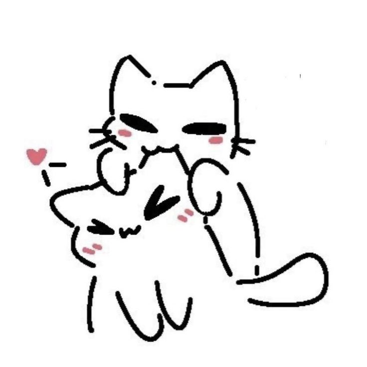

Oye, la verdad, no sé cómo empezar algo así. Nunca creí amar tanto a alguien como te amo a ti, nunca pensé en llegar a ser tan amada, tan querida. Desde que nos conocimos, o bueno, desde que sabía que eras de acá de Guate, quería conocerte. O sea, no sé por qué, pero solo sabía que me caías bien JAJA.
Yyy conforme nos fuimos conociendo más y más, te volviste parte de mi día a día, te volviste mi mejor amigo, alguien a quien le contaba casi todo, algo que no hacía con nadie más. Surgió una conexión increíble entre nosotros. Cada día sabía que no quería que te fueras de mi vida, a pesar de que aún no te viera de forma romántica.
Entendí que eres un hombre increíble, y que me empezaba a dar miedo que nunca nos pudiéramos conocer en persona, porque era un sueño que tenía. Cuando por fin salió la oportunidad de conocernos, juro que ese día estaba tan emocionada, pero a la vez tenía miedo de que yo no fuera lo que esperaras. Recuerdo que ese día me dolía horrible el estómago por tan nerviosa que estaba JAJA.
Cuando por fin te vi, o bueno, mi mamá te ubicó primero, fue increíble. Dije: "Wow, por fin estamos acá". Cuando intentaba agarrarte de algún lado, me daba miedo porque pensaba que era muy pronto, tipo, apenas nos conocíamos en persona, pero sabía que era el inicio de algo, algo que no quería que terminara, nunca.
Luego, con las salidas, fue cuando puesss me enamoré de ti. Con los mensajes mensajes y todo era como que mi corazón ya te pertenecía, mis pensamientos eran constantemente sobre ti. A veces me daba miedo amar, o me daba miedo estar enamorada, porque era la primera vez que de verdad sentía tanto, tanto, tanto amor. Sabía que sentías eso por mí antes que yo por ti, pero nunca supe cuándo decírtelo cuando por fín acepté que estaba enamorada de ti.
La salida que tuvimos en Cayalá, cuando estaba hablando con Majo, me recuerdo que luego de la llamada te quería besar JAJAJ. Cuando fue que te abracé en los sillones, dije: "Ay, acá me lo beso, no importa", pero luego dije que no quería que fuera ahí. Quería que fuera como mejor, ¿sabes? Me refiero a que quería que fuera más íntimo, más en privado. Quería decirte tantas cosas, pero solo no me salían las palabras. Cada que te quería decir, me callaba y pensaba en tanto, porque ¿qué pasaba si ya no querías?...
Yy bueno, ya llega el 20 de diciembre. Pensaba decírtelo en la noche, o sea, cuando nos estábamos enviando snaps y toda la cosa. Dije: "Ay, bueno, le digo ya de una que me gusta, lo amo, seamos novios". Pero al siguiente día te veía, así que preferí esperar. Recuerdo que el 21 de diciembre, desde la mañana estaba tan nerviosa que casi lloraba pensando: "¿Qué hago si me dices que no?". Por algo estuve medio callada ese día. Nunca me atreví a decírtelo, y me frustraba eso, no poder decirte lo que sentía. Solo sentía que el tiempo pasaba y pasaba y nada, no me salían las palabras que tanto te quería decir.
Luego, cuando me abrazaste, me quería quedar ahí, entre tus brazos, decirte todo lo que mi corazón anhelaba, todo el amor que te quería dar, y luego pues nos sentamos, y aún no sabía cómo decírtelo. Yyy bueno, cuando ya estábamos tan pegados, éramos solo tú y yo, nadie más alrededor, y cuando luego de solo hacer dos preguntas y luego me besaste, sabía exactamente dónde quería estar el resto de mi vida. Supe lo que quería, quería una vida completa junto a ti, amándote, queriéndote, deseándote, ser solo nosotros.
Esa noche recuerdo lo feliz que estaba. Temblaba por miedo a decirle a mi mamá, pero ya sabía que por fin podía ser yo con alguien, ser amada, amar a alguien. Nunca podré describir ese sentimiento tan hermoso que me haces sentir cada día. Cada día junto a tu lado es lo mejor del mundo.
Yyy bueno después de toda la mini historia te tengo una promesita y lo que quiero contigo 💞.
Te quería decir que quiero ser feliz a tu lado, quiero verte sonreír cada día, agarrarte de la mano mientras caminamos, quiero estar en cada meta que cumplas y en cada paso de superación que tengas. Pero lo más importante? Quiero estar cuando te sientas mal, cuando sientas que ya no puedes más, cuando quieras rendirte, yo quiero estar en esos momentos, para ser tu apoyo, abrazarte y siempre recordarte de la gran persona que eres, y que eres alguien increíble que puede con más de lo que imagina. No siempre todo será perfecto, lo sé, pero se trata de eso, de ser imperfectos, de amar las locuras que hacemos, reírnos hasta no poder más, o estar en malos momentos para luego poder arreglarlo estando el uno para el otro pero nunca silencio absoluto, de secarnos las lágrimas mutuamente, pero sobre todo, que estemos siempre ahí, el uno para el otro. Y te prometo, no quiero que creas que estoy para algo corto contigo, ni para perder nuestro tiempo, sino que para construir una vida, un futuro, una HISTORIA contigo, quiero pasar el resto de mi vida estando a tu lado. Estaré contigo siempre, siempre contigo a mi lado.
Sé que aún tengo que aprender muchísimo sobre el amor, pero quiero aprenderlo contigo, aún tengo muchos defectos que corregir, pero quiero corregirlos por nosotros, aún no alcanzo mi mejor versión, pero quiero que seas tú quien la disfrute, aún quedan muchísimas cosas por vivir, pero sé que quiero vivirlas junto a ti. Y sabes, amarte es poco, te amo más de lo que puedas imaginar, te amo más de lo que puedas pensar, te amo más de lo que pueda demostrar, realmente te amo con toda mi alma, mi corazón y mi vida. Prometeré que nunca dejaré de escogerte, a pesar de días malos, días buenos, nunca me rendiré, nunca dejaré de decirte que te amo. Quiero crecer contigo, soñar contigo, siempre encontrar una manera de regresar contigo. Porque lo que tenemos es raro, y vale la pena seguir escogiendo, cada día, solo a ti.
Sé que aún somos jóvenes, pero no espero que seamos perfectos, cometemos errores, a veces no nos comunicamos, tenemos días malos. Pero por encima de todo eso, espero que sigamos aprendiendo juntos, creciendo juntos, y nunca rendirnos en cosas que importan, nuestra relación. Espero seguir esforzándonos cada día, para volvernos mejores para nosotros, espero que sigamos haciendo proezas. Y espero que nos quedemos, no importa qué tan difíciles sean las cosas, porque ya sé qué es lo que amo, a quién amo, y es a ti.
Siempre me harán falta palabras para describirte que tanto te amo, capaz no lo pude escribir todo porque no se me vino cuando hice esto jeje, pero quiero que sepas que te amo mas que nada en mi vida.
Tengo UNA sola vida, y la quiero pasar junto a TI.

De: Duvalín 😝😝
Para: Iancito 💘💞